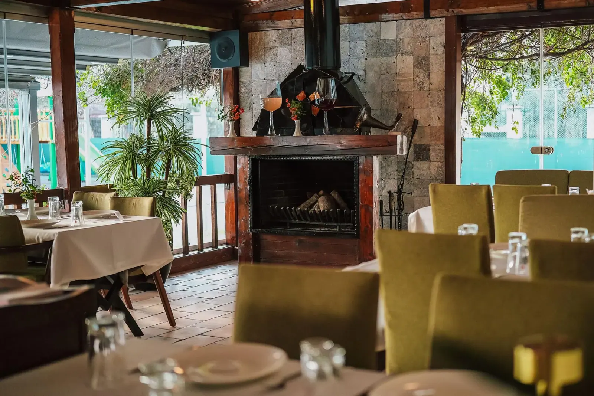
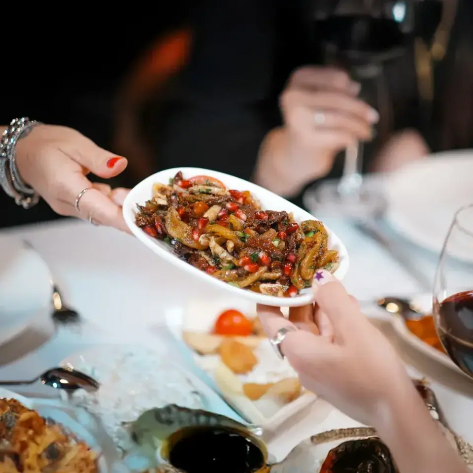
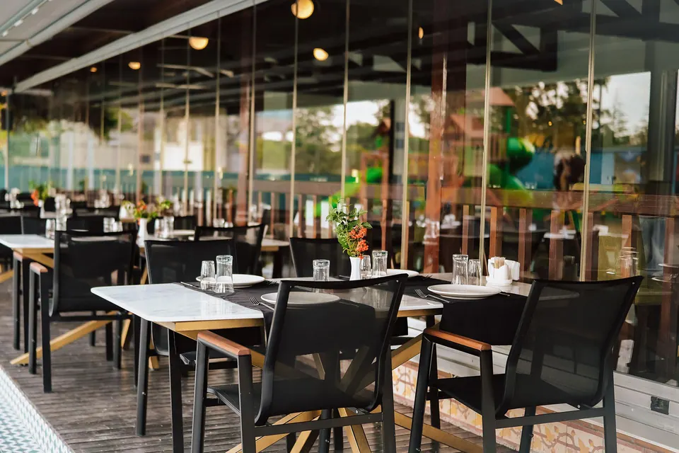
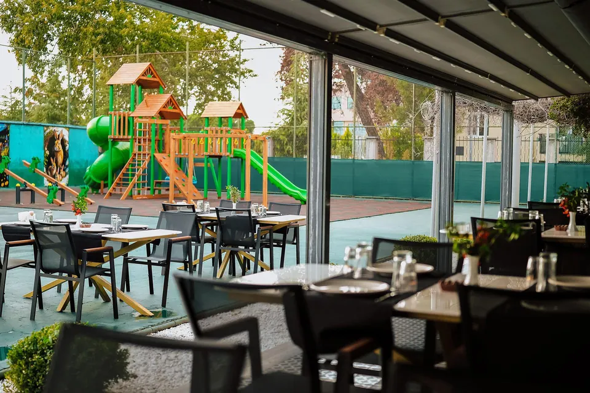
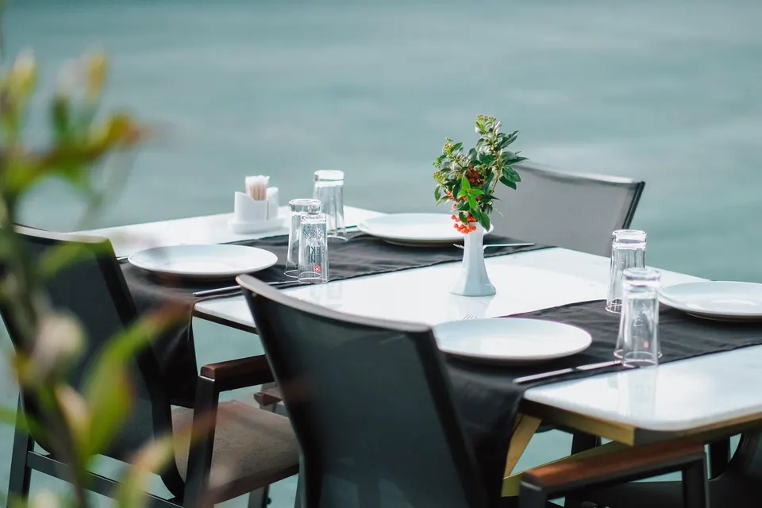

Ocakbaşı · Edirne
Kömür ateşinde, uzun sofralarda
Kebap, et ve mezelerden oluşan menümüzü doğru pişirme teknikleri, özenli servis ve güçlü bir sofra kültürüyle sunuyoruz.
- Şimdi
- SaatlerPzt-Paz 12:00–01:00
- Adres1. Murat Mah. Haşim İşcan Cad. No:29 (Değirmen Pub), 22100 Merkez/Edirne
- Telefon+90 284 502 12 22
Ocakbaşı
Klasik ocakbaşı lezzetleri kömür ızgarasında, seçili ürünlerimiz odun ateşinde pişiyor.
Edirne'de, iyi yemek için uzun sofralarda buluşmak isteyen misafirlerimizi ağırlıyoruz.

Edirne
Salondan ve teras masalarından
Cam cepheli salon, çocuk oyun parkına bakan masalar ve uzun sofralar.



Edirne
Haşim İşcan Caddesi'nde, Edirne'de
| Pazartesi | 12:00–01:00 |
|---|---|
| Salı | 12:00–01:00 |
| Çarşamba | 12:00–01:00 |
| Perşembe | 12:00–01:00 |
| Cuma | 12:00–01:00 |
| Cumartesi | 12:00–01:00 |
| Pazar | 12:00–01:00 |
Telefon+90 284 502 12 22
- Rezervasyon için +90 539 587 40 97 numarasını arayabilirsiniz.